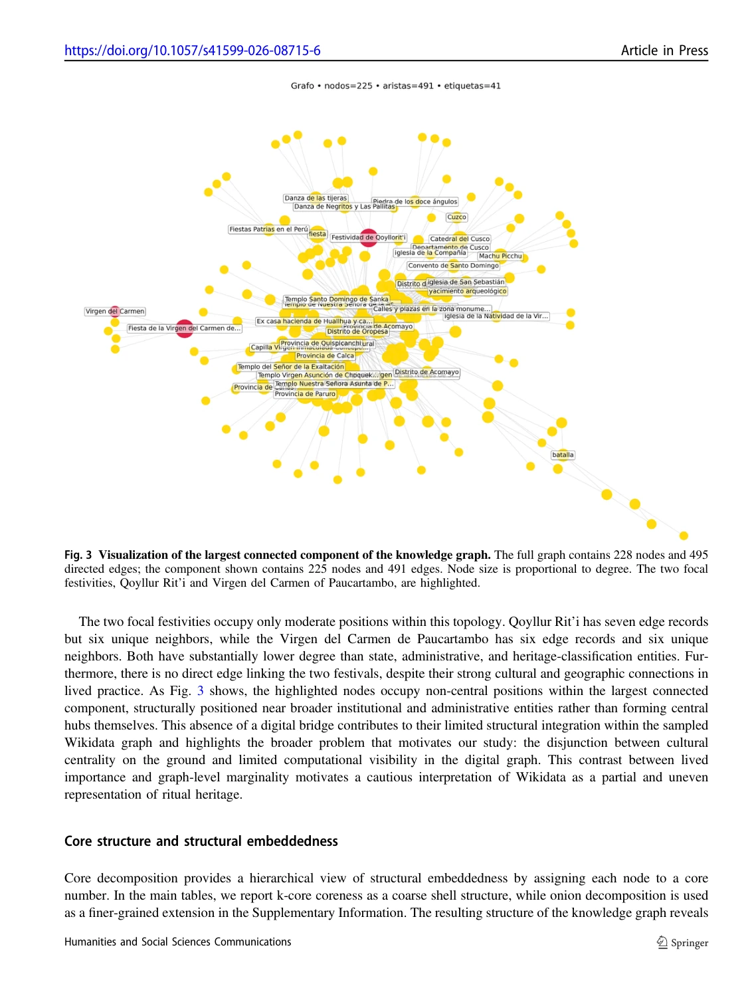

De Chile al territorio de Qoyllur Rit’i
La historia de esta investigación reúne una trayectoria de Chile al Perú, trabajo interdisciplinario y participación directa en prácticas rituales de la región del Cusco. El territorio no es una ilustración secundaria de los datos: es el contexto en que se observaron las relaciones que después se modelaron.
Trabajo y colaboración
Javier Vera Zúñiga y Dina Cornejo Meza han trabajado conjuntamente en el estudio de la representación digital del patrimonio andino. Los artículos también reconocen a sus otros coautores y el aporte de los colectivos, participantes y fuentes que hacen posible documentar estas prácticas.
Publicaciones de Dina · Google ScholarExperiencia de campo
El manuscrito del grafo situado se fundamenta en observación participante de la peregrinación de 2025, incluida la participación del primer autor en la comparsa de ukukus de la Nación Paucartambo. El registro fotográfico y cartográfico de 2026 amplía la documentación territorial, pero no es la fuente temporal del grafo descrito en ese manuscrito.

La exposición examina tres infraestructuras diferentes de representación: una clasificación institucional (UNESCO), una base de conocimiento colaborativa (Wikidata) y un grafo construido a partir de documentación de campo. No son intercambiables y no responden exactamente a la misma pregunta científica.
Los grafos: estudiar relaciones, no solo contar elementos
Una red es útil cuando queremos comprender cómo se conectan los elementos de un registro. La pregunta cambia según qué se considera un nodo y qué significa una arista.
Red de coocurrencia de descriptores
Las conexiones aparecen porque dos etiquetas se asignan a los mismos elementos del inventario.

Grafo de conocimiento situado
Las entidades no son palabras clave: representan eventos, lugares, actores y relaciones documentadas.

El artículo UNESCO construye enlaces no dirigidos y ponderados entre descriptores que coocurren en los registros. El grafo situado utiliza entidades y relaciones tipadas en RDF/OWL para documentar lugares, acontecimientos, actores y secuencias. Son dos modelos con unidades de análisis y criterios de construcción diferentes; no deben interpretarse como si fueran la misma red.
Explorar el grafo de Qoyllur Rit’i
Abre la red original para buscar entidades, explorar conexiones y filtrar por tipo de nodo.
Abrir grafo interactivoQoyllur Rit’i Explorer
Demostración de preguntas y respuestas asistidas por recuperación de información. Es un sistema experimental, no una fuente autónoma.
Abrir la aplicación RAGQué aportan las técnicas utilizadas en los artículos
| Herramienta | Qué permite observar | Qué no permite concluir por sí sola |
|---|---|---|
| Louvain | Comunidades: grupos de nodos que se conectan más entre sí bajo una función de modularidad. | Una comunidad matemática no es necesariamente una comunidad social. |
| Entropía de Shannon | Cómo se distribuyen los registros de un país entre comunidades de descriptores. | No mide la riqueza de una cultura ni el valor del patrimonio. |
| k-core | Capas de integración estructural según el número de vecinos que se mantienen en cada subgrafo. | No mide importancia ritual ni impacto cultural. |
| RDF / OWL | Entidades, tipos, relaciones y procedencia en un vocabulario explícito. | El grafo nunca agota una práctica vivida. |
UNESCO: la estructura que producen sus propias categorías
Aquí conservamos y ampliamos el apunte de lectura original que proporcionaste. El objeto del estudio son los metadatos y su clasificación, no una medición de las culturas sudamericanas.
El punto de partida: una lista también es una forma de clasificar
La Convención para la Salvaguardia del Patrimonio Cultural Inmaterial de 2003 creó un marco internacional para documentar, reconocer y salvaguardar prácticas, rituales y sistemas de conocimiento. Las listas y registros de UNESCO cumplen una función evidente de reconocimiento, pero tienen además otra dimensión. Para ingresar en esa infraestructura, cada manifestación debe convertirse en un registro comparable con los demás. Tiene un título, un país o varios países asociados, un tipo de lista y, sobre todo para este estudio, un conjunto de descriptores.
Ese paso es importante porque clasificar nunca consiste únicamente en “guardar” información. Una clasificación selecciona vocabulario, agrupa fenómenos distintos bajo categorías comunes y establece qué rasgos quedan en primer plano. Por eso conviene leer las listas de UNESCO como una infraestructura clasificatoria: no como un inventario pasivo, sino como un sistema que hace que el patrimonio sea legible a escala global mediante categorías estandarizadas.
La pregunta crítica surge precisamente ahí. Una práctica local puede ser religiosa, política, territorial, ecológica, performativa y comunitaria al mismo tiempo. Para incorporarla a una base de datos global, parte de esa complejidad debe expresarse mediante un vocabulario común. Este proceso no es necesariamente erróneo —sin categorías sería difícil construir un inventario internacional—, sino de que vale la pena estudiar qué patrones produce.
Qoyllur Rit’i: ver la clasificación en funcionamiento
La Peregrinación al Santuario del Señor de Qoyllurit’i sirve de entrada al problema. UNESCO la inscribió en 2011 en la Lista Representativa del Patrimonio Cultural Inmaterial de la Humanidad. La ficha oficial describe una peregrinación andina articulada en torno al santuario de Sinakara, con procesiones, danzas, música, organización comunitaria y una religiosidad donde se encuentran tradiciones católicas y andinas. La entrada oficial puede consultarse aquí.
Para que esa práctica ingrese en el sistema, UNESCO la asocia con diferentes términos. Estos son los descriptores que le corresponden:
| Descriptores primarios | Descriptores secundarios |
|---|---|
| Pilgrimages, Procession, Dance, Costumes, Masks, Percussion instruments, Textile arts | Animism, Catholicism, Religious syncretism, Sacred sites, Tribes |

El ejemplo permite entender la tensión que motiva el estudio. Los términos no son necesariamente falsos: danza, procesión, máscaras, peregrinación o arte textil son dimensiones reconocibles de Qoyllur Rit’i. Al mismo tiempo, el conjunto de etiquetas traduce una práctica compleja a un vocabulario institucional predeterminado. La pregunta es qué ocurre cuando esta operación se repite en cientos de inscripciones, y si esa repetición genera regularidades en la manera de representar regiones enteras.
Qoyllur Rit’i es también útil porque muestra la diferencia entre las dos capas del vocabulario. Los descriptores primarios llevan al frente categorías performativas o devocionales; los secundarios introducen términos que pretenden contextualizar la práctica, como religious syncretism, animism o sacred sites. Lo que importa no es discutir una etiqueta aislada, sino observar cómo estas etiquetas se relacionan sistemáticamente a escala del corpus completo.
Las preguntas de investigación
El análisis se organiza alrededor de tres preguntas.
- ¿Los países sudamericanos quedan asociados de manera desproporcionada con comunidades semánticas que pueden caracterizarse como religiosas o folclóricas?
- ¿Términos como animismo, sincretismo o tribu aparecen de forma sistemática como descriptores secundarios, y puede esa ubicación indicar formas de marginación epistémica dentro de la clasificación?
- ¿Qué muestran los vínculos entre descriptores primarios y secundarios sobre la tensión entre categorías institucionalizadas —como procesión— y nociones contextuales —como sincretismo?
Las tres preguntas apuntan a escalas distintas del mismo problema. La primera mira la posición de los países dentro de grandes agrupaciones semánticas. La segunda observa la jerarquía interna del vocabulario —qué conceptos quedan en la capa primaria y cuáles en la contextual—. La tercera estudia las conexiones entre ambas capas. Juntas permiten pasar de una impresión crítica general sobre la clasificación a patrones que pueden medirse en el corpus.
¿Qué se analiza exactamente?
La fuente son los metadatos públicos del portal de Patrimonio Cultural Inmaterial de UNESCO. El corpus global contiene más de 1.200 elementos inscritos y más de 700 etiquetas conceptuales distintas. Para cada elemento pueden recuperarse, entre otros campos, el año, el tipo de lista, el país o países asociados y los descriptores primarios y secundarios.
Hay una decisión metodológica especialmente importante: los nodos de las redes no son las manifestaciones patrimoniales; son los descriptores. Las manifestaciones funcionan como evidencia de que dos términos coocurren. Si Dance y Masks aparecen juntos en una inscripción, se crea una relación entre ambos; si aparecen juntos en muchas inscripciones, esa relación adquiere mayor peso.
Elemento UNESCO → conjunto de descriptores → pares de términos que coocurren → conexiones ponderadas entre términos.
En Qoyllur Rit’i, por ejemplo, Dance, Costumes y Masks aportan conexiones a la red primaria; Animism y Religious syncretism aportan conexiones a la red secundaria; y una relación como Procession ↔ Religious syncretism aporta una conexión entre ambas capas.
De esta operación se construyen tres redes complementarias: una red de coocurrencia entre descriptores primarios (GP), otra entre descriptores secundarios (GS) y una red cruzada (G×) que vincula primarios con secundarios. Esta arquitectura es sencilla, pero permite cambiar la unidad de observación: en lugar de leer cientos de fichas una por una, se estudia la estructura relacional del vocabulario que las organiza.
¿Qué hace Louvain?
Una vez construida una red, se aplica detección de comunidades con el algoritmo de Louvain. La intuición basta para seguir el argumento: una comunidad es un conjunto de nodos que están más densamente conectados entre sí que con el resto de la red. El algoritmo no recibe de antemano categorías como “ritual”, “artesanía” o “ecología”. Detecta grupos a partir del patrón de conexiones; después, esos grupos se interpretan examinando los términos más frecuentes que contienen. Por eso los nombres de las comunidades son resúmenes interpretativos posteriores, no etiquetas introducidas antes del análisis.
¿Qué hace la entropía?
Detectadas las comunidades, queda preguntar cuán repartida está la representación de cada país entre ellas. Para eso utiliza entropía de Shannon. Una entropía alta indica que las inscripciones asociadas a un país aparecen distribuidas en varias comunidades; una entropía baja indica concentración en unas pocas. Es fundamental no confundir esta medida con una medida de “diversidad cultural real”: cuantifica diversidad representacional dentro del sistema de clasificación de UNESCO.
Resultados: la estructura del vocabulario
Cómo leer la Figura 1
Cada nodo es un descriptor primario; el tamaño refleja su frecuencia y las conexiones representan coocurrencias. Los colores corresponden a comunidades detectadas por Louvain. La red primaria reúne 220 descriptores y 1.026 conexiones ponderadas. El resultado principal no es la posición exacta de cada palabra en el dibujo, sino la existencia de conjuntos relativamente cohesionados: prácticas performativas, conocimiento oral y ecológico, prácticas materiales y artesanales, formas poéticas y teatrales, y registros agrícolas o rituales.
Al proyectar las inscripciones sudamericanas sobre esas comunidades, aparece una presencia importante en los polos performativos, religiosos y ecológicos. Esto ofrece la primera evidencia de que la taxonomía no es un conjunto plano de palabras: tiene una topología, es decir, zonas donde determinados conceptos tienden a aparecer juntos de manera recurrente.

Qué cambia en la capa secundaria
La segunda red es mayor: 450 descriptores y 1.700 conexiones ponderadas, con una modularidad reportada de Q = 0,47. El vocabulario contextual incorpora con mucha más fuerza dimensiones ambientales, históricas, técnicas, éticas y de transmisión. Se distinguen cinco dominios principales: conocimiento agrícola y ecológico; prácticas materiales y técnicas; memoria colonial y performance; riesgo y transmisión; e identidad, intolerancia y ética.
Este contraste es crucial. La complejidad contextual no está necesariamente ausente de los registros de UNESCO. Con frecuencia está situada en otra capa del sistema. Por eso el análisis no afirma simplemente que las fichas “simplifican” el patrimonio: muestra que la distribución de la complejidad entre una capa principal y una capa contextual es también una forma de organización del conocimiento.
Resultados: ¿cómo quedan representados los países?


Qué aporta la Figura 3 al argumento
Aquí la pregunta ya no es qué comunidades existen, sino cuánto pesa cada comunidad en la representación de cada país. En la capa primaria, Perú y Bolivia presentan una fuerte concentración en comunidades asociadas con prácticas performativas y religiosas; juntas representan más de dos tercios de sus elementos clasificados. Brasil presenta un perfil más repartido entre varios dominios.
La comparación entre los dos paneles es el punto central de esta sección. En el primero, el patrimonio de Perú, Bolivia y Ecuador se agolpa en las comunidades performativas y devocionales: estos países aparecen, sobre todo, como lugares donde se danza y se procesiona. En el segundo, las mismas barras se reparten entre más comunidades, y crecen las asociadas al conocimiento agrícola y ecológico, con términos como agroecosistemas, pastoralismo o conocimiento de la naturaleza y el universo.
El contraste importa porque se trata de las mismas inscripciones descritas dos veces. Lo que cambia no es el patrimonio sino la capa del vocabulario que se examina. La dimensión ecológica y epistemológica de estas prácticas sí está registrada en el sistema de UNESCO, pero en el nivel contextual y no en el que define de entrada qué es cada elemento.
La diferencia entre capas es parte del hallazgo: no basta con contar etiquetas; hay que observar dónde quedan ubicadas dentro de la arquitectura de metadatos.
Entropía: medir concentración sin confundirla con “diversidad cultural”

Cómo interpretar la entropía
La entropía resume cuán concentrada o dispersa está la representación de un país entre las comunidades detectadas. Brasil y Colombia presentan los valores medios más altos, seguidos por Perú, mientras Uruguay presenta la mayor concentración. Más importante que convertir esto en un ranking es observar la comparación entre capas: para la mayoría de los países, la entropía es mayor entre los descriptores secundarios.
El ejemplo más claro es el cambio entre una superficie clasificatoria relativamente estrecha y un vocabulario contextual más amplio. Argentina pasa de 1,46 en la capa primaria a 2,16 en la secundaria; Uruguay, de 0,81 a 1,89. Esto sostiene la idea de que la capa secundaria conserva matices que no necesariamente aparecen con la misma fuerza en el nivel principal.
La precaución conceptual es indispensable: una entropía mayor no significa que un país “tenga más cultura”. Significa únicamente que UNESCO lo representa mediante un repertorio más distribuido de comunidades semánticas en ese conjunto de metadatos.
La red cruzada: donde se encuentran las dos capas

Por qué esta figura es especialmente importante
La red cruzada no pregunta qué conceptos forman comunidades dentro de una misma capa, sino qué categorías primarias aparecen de manera recurrente junto con qué descriptores secundarios. La visualización muestra solamente asociaciones especialmente fuertes —por encima del percentil 95 del peso de las conexiones— para hacer visibles emparejamientos sistemáticos.
Entre las asociaciones más marcadas figuran Procession ↔ Religious syncretism, Dance ↔ Tribes, Pilgrimage ↔ Animism, Festival ↔ Colonial history y Textile arts ↔ Knowledge concerning nature and the universe. El interés no está en afirmar que una relación individual sea problemática por sí misma, sino en observar que la taxonomía tiende a acoplar determinados lenguajes institucionales con determinados lenguajes contextuales.
Qoyllur Rit’i vuelve a aparecer aquí con claridad. Procession funciona como una categoría primaria globalmente legible, mientras Religious syncretism queda como un término contextual. La relación entre ambas muestra el tipo de traducción epistemológica que interesa al artículo: prácticas locales complejas son incorporadas a una ontología global mediante un reparto desigual entre categorías centrales y categorías de contexto.
¿Qué significa “sesgo semántico” en este estudio?
“Sesgo” no significa aquí que alguien haya introducido deliberadamente una clasificación falsa o peyorativa. Se refiere a una regularidad estructural: ciertas regiones y prácticas quedan representadas de manera más recurrente mediante unos campos semánticos que mediante otros, y algunos tipos de conocimiento aparecen sistemáticamente en posiciones más contextuales.
En los resultados, los países andinos quedan fuertemente asociados, en la capa primaria, con vocabularios de ritual, performance y devoción. Brasil y Colombia ocupan un espectro de comunidades más amplio. Al mismo tiempo, dimensiones ambientales, cosmológicas, históricas o vinculadas con conocimientos locales aparecen con mayor diversidad en la capa secundaria. La contribución dlo que se muestra es que esas asimetrías pueden estudiarse como propiedades de una infraestructura de metadatos y no únicamente mediante lectura cualitativa de casos individuales.
La noción de traducción epistemológica ayuda a entender la discusión final. Para que una práctica sea interoperable dentro de una clasificación internacional debe entrar en términos comparables con miles de registros. Esa operación produce visibilidad: Qoyllur Rit’i puede localizarse, relacionarse y compararse dentro del portal de UNESCO. Pero la misma operación delimita las palabras mediante las cuales la práctica se vuelve legible. La visibilidad y la reducción clasificatoria no son procesos opuestos; ocurren simultáneamente.
Lo que el análisis no permite afirmar
El propio artículo establece límites importantes. Conviene tenerlos presentes tanto al enseñar el trabajo como al discutirlo:
- Las redes describen la práctica clasificatoria de UNESCO, no la estructura de las culturas analizadas.
- Los descriptores son artefactos editoriales. Que un término sea secundario no significa, por definición, que sea culturalmente menos importante; el interés surge cuando determinados tipos de términos aparecen sistemáticamente en esa posición.
- La coocurrencia indica que dos etiquetas aparecen en una misma inscripción, pero no captura por sí sola la importancia narrativa que cada concepto tiene dentro del expediente completo.
- Las inscripciones multinacionales se asignan a cada país asociado siguiendo la atribución de UNESCO; aproximadamente 12 % de las inscripciones sudamericanas del corpus involucran a más de un país. Esto puede influir especialmente en perfiles con pocos casos.
- La entropía mide amplitud dentro de la ontología de UNESCO. No debe usarse para ordenar países según una supuesta “riqueza” o “diversidad” cultural intrínseca.
Estas limitaciones son importantes porque evitan una lectura esencialista de las figuras. Si Perú aparece concentrado en comunidades rituales, la conclusión no es “Perú es principalmente ritual”. La conclusión es que las inscripciones vinculadas con Perú ocupan de manera desproporcionada esas zonas de la clasificación de UNESCO.
¿Por qué usar redes para este problema?
Una tabla de frecuencias puede decir cuántas veces aparece Dance o Religious syncretism. Una red añade otra pregunta: ¿con qué aparecen? Esa diferencia es el corazón metodológico del trabajo. Al estudiar relaciones y no únicamente frecuencias, se vuelve posible encontrar constelaciones de términos, comparar la posición de países dentro de ellas y observar puentes entre distintos niveles de la taxonomía.
La detección de comunidades y la entropía tampoco sustituyen la interpretación. Funcionan como herramientas de escala. Louvain organiza una red compleja en agrupaciones que luego deben ser leídas; la entropía convierte la dispersión entre esas agrupaciones en una magnitud comparable. La lectura patrimonial sigue siendo necesaria para decidir qué significa una concentración y por qué una pareja como Procession ↔ Religious syncretism resulta significativa.
Ese equilibrio entre método computacional y lectura crítica es quizá uno de los aportes más útiles para estudiantes: la técnica no “descubre” automáticamente el sesgo. Hace visible una estructura que después debe discutirse a la luz de cómo funcionan las instituciones, los vocabularios y los procesos de inscripción.
Wikidata: qué vínculos quedaron registrados y cuáles no
El segundo artículo compara la representación digital de Qoyllur Rit’i y de la Festividad de la Virgen del Carmen de Paucartambo en Wikidata. A diferencia de UNESCO, aquí los nodos son entidades y las relaciones provienen de propiedades semánticas consultadas mediante SPARQL.
Del registro de Wikidata a la red analizada
La extracción SPARQL, realizada entre marzo y junio de 2025, parte de los identificadores Q2408955 (Qoyllur Rit’i) y Q60643381 (Virgen del Carmen de Paucartambo). Se seleccionan propiedades de clasificación, pertenencia, localización y jerarquía como P31, P527, P131 y P279. El análisis se efectúa sobre esa muestra y esos predicados; no sobre todo Wikidata.

Un resultado concreto: k-core no es importancia cultural
Qoyllur Rit’i
Se encuentra en la capa 3 de la descomposición k-core del grafo muestreado. Está integrado en relaciones digitales, pero no forma parte del núcleo institucional más denso (capa 4).
Nodo en Wikidata: Q2408955.
Virgen del Carmen de Paucartambo
Se sitúa en la capa 1, aun siendo central en la vida ritual de Paucartambo. Los datos digitales del muestreo no reflejan automáticamente esa centralidad vivida.
Nodo en Wikidata: Q60643381.
Las cuatro capas tienen, respectivamente, 57, 33, 102 y 33 nodos en el componente mayor analizado. Que no exista una arista directa entre ambos festivales en esta red seleccionada no demuestra que no exista relación cultural. Indica una ausencia en el conjunto de relaciones recuperadas bajo los criterios metodológicos del estudio.
La posición de un nodo es un resultado sobre cómo fue representado en una infraestructura y una muestra específica, no una medida de su relevancia social.
Límites: las relaciones dependen de las propiedades consultadas, de las decisiones editoriales en Wikidata y de los datos disponibles en el período de extracción. En el artículo, las 495 aristas son registros de relaciones dirigidas; al colapsar duplicaciones de pares de origen y destino quedan 493 pares dirigidos distintos.
Del registro digital al territorio recorrido
La peregrinación articula lugares, momentos, desplazamientos, colectivos, objetos y prácticas. Para poder modelar esas relaciones primero hay que reconocer cómo se viven y documentan en campo.


Fotografías: Javier Vera Zúñiga, archivo de campo compartido para la conferencia (2026). Los lugares y secuencias deben leerse junto a la documentación GPS, no deducirse automáticamente de una imagen aislada.
El GPX enlazado contiene puntos de referencia y favoritos, no se presenta como la traza completa. El mapa narrativo emplea su propio conjunto de rutas y paradas del proyecto; su contenido puede revisarse antes de hacerlo público.
Construir un grafo desde el campo: conocimiento situado
El tercer trabajo no consiste en ampliar mecánicamente Wikidata. Parte de una decisión diferente: emplear la participación y la documentación de la peregrinación de 2025 como fuente principal para representar secuencias y relaciones que las bases institucionales describen solo parcialmente.
Qué se modela
Una ontología RDF/OWL relaciona 39 lugares, eventos y sus marcos temporales, vestimenta, instrumentos y otros elementos. El documento describe 28 eventos ordenados en siete marcos temporales, 14 propiedades de datos, aproximadamente 340 afirmaciones de relación entre entidades y 180 afirmaciones de datos. Es una representación inicial y deliberadamente acotada, no un inventario exhaustivo del ritual.
Para observar el conjunto de relaciones en una visualización navegable, abre el grafo interactivo del proyecto; puedes buscar una entidad y examinar sus conexiones.
La Lomada: una ruta y un acontecimiento
El caso de la Lomada (Loman Pureq) es particularmente instructivo: el manuscrito la documenta como una caminata ritual de aproximadamente 24 horas, con siete puntos de paso, y al mismo tiempo como un evento con secuencia y participación. Modelarla como una entidad con doble pertenencia a las clases EventoRitual y Lugar evita forzarla a una sola categoría.
El manuscrito identifica cinco entidades de doble naturaleza evento–lugar, incluida la Lomada. No se trata de decir que todos los lugares sean eventos: se argumenta, a partir del caso documentado, que algunas acciones rituales y sus espacios resultan inseparables para los fines de representación del grafo.
La procedencia también importa: la posibilidad de relacionar una afirmación con fuentes, observaciones y contexto hace que el grafo sea auditable y revisable. Ese principio permite discutir tanto lo que el modelo incorpora como lo que todavía falta representar.
Inteligencia artificial: consultar el grafo y reconocer sus límites
El manuscrito evalúa un sistema de recuperación aumentada con generación (Graph-RAG). Su función principal en el artículo es diagnosticar qué puede recuperar el grafo, no demostrar que la IA ya comprenda la peregrinación.

La evaluación reportada
| Consulta | Resultado | Lectura metodológica |
|---|---|---|
| ¿Qué es la Lomada? (C11) | Correcta | La respuesta recupera su doble condición de evento y lugar. |
| ¿Qué lugares recorre la Lomada? (B7) | Parcial | Se recuperan tres de siete lugares de paso. |
| ¿Qué ocurre el lunes? (B6) | Fallida | La recuperación privilegia propiedades de la ontología frente a los acontecimientos. |
| ¿Qué es P’achakunapata? (C12) | Parcial | Hay representación, pero el contexto relacional recuperado es insuficiente. |
En 7 de las 16 preguntas aparecieron entre los cinco primeros resultados componentes del esquema ontológico (TBox, como clases y propiedades), en lugar de entidades concretas documentadas (ABox). El fenómeno contribuye a explicar algunas respuestas fallidas: no basta con tener relaciones correctas si el mecanismo de búsqueda recupera el tipo de información equivocado.
El valor de la prueba está en hacer visibles las fortalezas y carencias del modelo. Responde mejor cuando la relación consultada está bien documentada y enlazada; es más frágil frente a dominios incompletos, vecindarios poco densos y ruido de recuperación.
Las demostraciones enlazadas son recursos técnicos en evolución: su estado actual puede no ser idéntico al sistema evaluado en el manuscrito fechado el 19/10/2026.
Tres resultados, tres escalas de representación
| Trabajo | Unidad analizada | Lo que podemos afirmar |
|---|---|---|
| UNESCO (2026) | Descriptores y coocurrencias | La clasificación institucional distribuye sus categorías de manera desigual. |
| Wikidata (2026) | Entidades y vínculos seleccionados | La visibilidad estructural de dos festividades es limitada en el grafo extraído. |
| Grafo de campo (manuscrito 2026) | Entidades rituales y relaciones observadas | Es viable representar secuencias, territorio y dualidades, pero la recuperación muestra lagunas verificables. |
Construir un grafo no equivale a completar una cultura con datos. Permite hacer explícitas relaciones, fuentes y decisiones de representación que pueden ser examinadas y corregidas.
Volver a los trabajos y a los datos
Estas son las fuentes concretas de las afirmaciones de la conferencia. El documento se ha redactado para que las figures y estadísticas puedan rastrearse hasta sus trabajos de origen.
Investigaciones
- Vera Zúñiga, Urbina Parada y Cornejo Meza (2026). UNESCO, redes semánticas y diversidad representacional. DOI 10.1038/s40494-026-02400-2.
- Vera Zúñiga y Cornejo Meza (2026). Representación de festividades en Wikidata. DOI 10.1057/s41599-026-08715-6.
- Situated Knowledge in Knowledge Graphs (manuscrito, 19/10/2026). Estudio de campo de 2025, ontología y evaluación Graph-RAG. Manuscrito no publicado.
Lecturas y materiales complementarios
Créditos y uso: texto y apunte académico aportado por sus autores; mapas y fotografías de campo aportados para la conferencia; las figuras científicas se atribuyen a sus publicaciones. Antes de publicar archivos con fotografías de terceros, imágenes de revistas o registros territoriales sensibles, revisar permisos, consentimiento y nivel de detalle público. Publicar un repositorio no implica ceder automáticamente licencias de reutilización sobre todos sus contenidos.
Preparado para la conferencia del 28 de octubre de 2026 en la Universidad Alberto Hurtado. El código HTML funciona localmente y en GitHub Pages, sin dependencias externas.